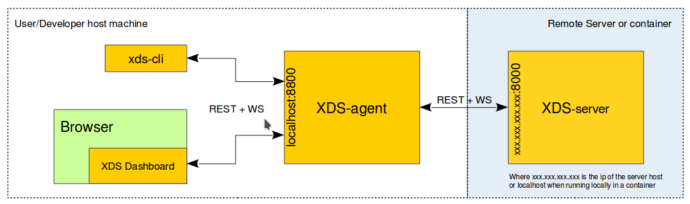

Installing XDS client tools
xds-agent is a client tool that must run on your machine (user / developer host) to be able to use XDS.
You should establish the following chain:
- XDS Client: (
xds-clior XDS Dashboard). - XDS Agent: (
xds-agent) running on your machine. - XDS Server (
xds-server) running on a remote server and/or in a container.
Exchanges between these 3 tools are done though HTTP and Websocket protocols.
Default url/port mentioned in schema below can be change using config files.

Installation of other XDS client tools, such as xds-cli or xds-gdb is
optional and depends of what you want to do:
- xds-cli : command line tool to used to interact with XDS (also used by IDE integration).
- xds-gdb : requested for debugging application.
Install packages for debian distro type
# 'DISTRO' can be set to { xUbuntu_16.04, xUbuntu_16.10, xUbuntu_17.04, Debian_8.0, Debian_9.0 }
export DISTRO="xUbuntu_16.04"
# AGL_RELEASE can be set to {AGL_ElectricEel, AGL_FunkyFlounder, AGL_Master}
export AGL_RELEASE="AGL_Master"
wget -O - http://download.opensuse.org/repositories/isv:/LinuxAutomotive:/${AGL_RELEASE}/${DISTRO}/Release.key | sudo apt-key add -
sudo bash -c "cat >> /etc/apt/sources.list.d/AGL.list <<EOF
deb http://download.opensuse.org/repositories/isv:/LinuxAutomotive:/${AGL_RELEASE}/${DISTRO}/ ./
EOF"
sudo apt-get update
sudo apt-get install agl-xds-agent
sudo apt-get install agl-xds-cli
sudo apt-get install agl-xds-gdb
Install packages for openSUSE distro type
# DISTRO can be set to {openSUSE_Leap_42.3, openSUSE_Leap_15.0, openSUSE_Tumbleweed}
export DISTRO="openSUSE_Leap_15.0"
# AGL_RELEASE can be set to {AGL_ElectricEel, AGL_FunkyFlounder, AGL_Master}
export AGL_RELEASE="AGL_Master"
sudo zypper ar http://download.opensuse.org/repositories/isv:/LinuxAutomotive:/${AGL_RELEASE}/${DISTRO}/isv:LinuxAutomotive:${AGL_RELEASE}.repo
sudo zypper ref
sudo zypper install agl-xds-agent
sudo zypper install agl-xds-cli
sudo zypper install agl-xds-gdb
Install for other platforms (Windows / MacOS)
-
Install
xds-agent:-
Download the latest released tarball from github releases page.
-
Then unzip the tarball any where into your local disk (for example:
/opt/AGL/xdsorC:\AGL\xds). -
Add binary to PATH:
- MacOs: create the .bash_profile
nano .bash_profileand addexport PATH="/opt/AGL/xds/xds-agent:$PATH - Windows: change the system path via control panel or system settings or
setx path "C:\AGK\xds\xds-agent;%path%"
- MacOs: create the .bash_profile
-
-
repeat the previous steps to install other tools depending of your needs:
xds-cli: requested for command line and IDE integration. (released tarball link).xds-gdb: requested for debugging application. (released tarball link).
Start xds-agent
XDS-agent is a client tool that must run on your local / user development machine when you use XDS.
For Linux distro, a user systemd service is provided, xds-agent.service.
To start it automatically at boot and you can enable it using following commands:
# Enable xds-agent service at boot
systemctl --user enable xds-agent.service
To start the XDS-agent service:
# Manually start xds-agent service
systemctl --user start xds-agent.service
# Get status and log of xds-agent service
systemctl --user status xds-agent.service
On MacOS (or Linux), you can start-it manually using following commands:
/opt/AGL/bin/xds-agent
On Windows, you can start-it manually using following commands:
C:\AGL\xds\xds-agent\xds-agent.exe